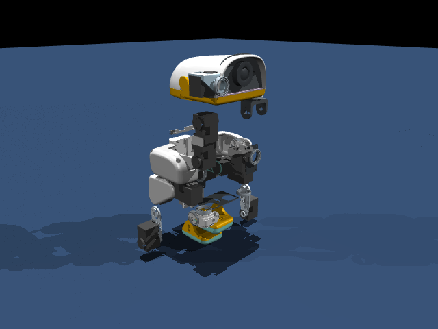
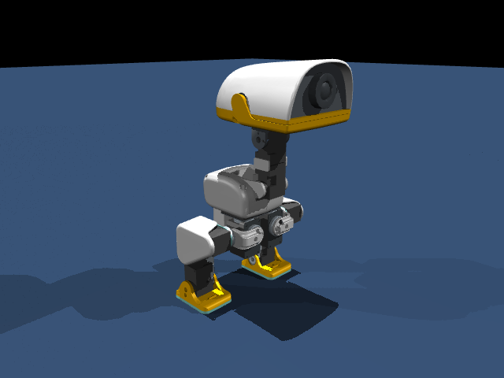
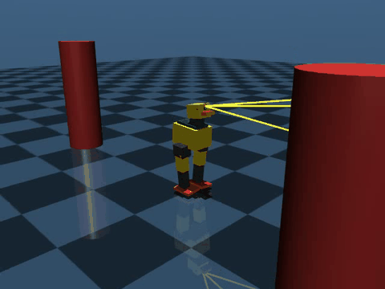

🦆 MicroDuck 8-DOF (Pollen Robotics CAD)
3D CAD & Simulation Hub
Mô hình Cơ khí 3D CAD, Danh mục Linh kiện BOM & Bộ não RL
🧩 Bản Vẽ Phân Rã 3D (Exploded View)
📐 Bản Vẽ Lắp Ráp 3D (Assembled CAD)
🎬 Video HD (Stage 3 Vượt Gờ Đất)
📡 3D Live Web Stream (Cổng 8080)
🖼️ Ảnh Động GIF (Xem Offline)

Mở bản vẽ 3D phân rã (.OBJ) bằng Windows 3D Viewer / Blender:
Start-Process "assets/cad/microduck_exploded_assembly.obj"
Sao chép lệnh

Mở mô hình 3D lắp ráp hoàn chỉnh (.OBJ) bằng Windows 3D Viewer:
Start-Process "assets/cad/microduck_assembly.obj"
Sao chép lệnh
Trình duyệt của bạn không hỗ trợ thẻ video HTML5.
Xem trực tiếp file video bằng Windows Media Player:
Start-Process "assets/media/microduck_stage3_demo.mp4"
Sao chép lệnh
Để khởi chạy máy chủ 3D trực tiếp tương tác xoay góc nhìn 360°:
python scripts/interactive_viewer.py --web --policy models/checkpoints/microduck_ppo.pt --stage 3
Sao chép lệnh

Mở ảnh GIF bằng trình xem ảnh mặc định:
Start-Process "assets/media/microduck_stage3_demo.gif"
Sao chép lệnh
Mô hình Cơ khí 3D
43 Chi tiết CAD (Pollen/HF)
Độ vững vật lý
Tiếp xúc sàn phẳng Z = 0.000m
Động cơ chấp hành
8 Servo (Dynamixel XL330)
File 3D Bàn Giao
OBJ + MTL, Exploded, ZIP STL